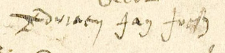
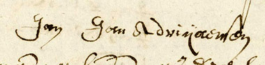
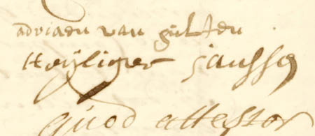

Adriaenssen uit Alphen
SAC = schepenbankarchief Alphen-Chaam
SAG = schepenbankarchief Gilze-Rijen
Breda = stadsarchief Breda
NA = notarieel archief Alphen
I
Jan Joosten Cornelissen
Deelt 2 jan 1581 met anderen de erfenis van wijlen Cornelis Joosten en diens weduwe Elizabeth.
Bron: NA 1, f.74r.
II
Adriaen Jan Joosten Cornelissen
Genoemd als schepen van Alphen in de jaren 1609, 1611, 1612, 1614-1617, 1622-23. Stadhouder van de schout te Alphen in 1615.
Bron: onder meer SAC 568, f.1r.
|
 |
|
Alphen 24 okt 1626: De handtekening van Adriaen Jan Joosten (Archief Henricus van Os, inv.nr.5, f.48r)
|
Met andere erfgenamen van Jan Joost Cornelissen verkoopt Adriaen Jan Joosten op 3 april 1619 een perceel hei- en weiveld gelegen 'in de crocht op Vijfhuijsen onder Alphen', groot anderhalve bunder, hun aangekomen en aanbestorven van hun ouders zo zij zeiden, aan Antonis Goijaert Adriaenssen en diens nakomelingen. Jan Jacob Janssen alias Sleutel vertegenwoordigt de verkopers.
Bron: SAC 568, f.112v de dato 3 april 1619.
Op 21 nov 1623 noteren de schepenen van Alphen:
Op heden den 17e marti 1623 soo bekenden Jan Jacops vander Voort alias Sleutel, vorster tot Castel onder Baerl ter eenre, ende Adriaen Jan Joosten ter andere sijden, met malcanderen wesen overcomen ende veraccordeert sekere coop der stede onder huijsinge, hovinge ende erfenisse den voorschreven vander Voort toebehoorende, gestaen ende gelegen tot Alphen Oosterwijck alhier genaempt wesende 'de Sleutel' [et cetera]
Bron: SAC 568, f.254r de dato 21 nov 1623. Zie ook f.273v de dato 16 maart 1624.
In latere akten uit 1624 verklaart Adriaen bij de schepenen de stede weer te zullen overdragen aan Jan Jacobs Sleutel, mits hij de kooppenningen terugkrijgt. Het is onduidelijk of dit is gebeurd. De koop is wel op 6 apr 1623 vastgelegd in een vestbrief te Breda, maar de tekst is van boven tot onder met een enkele pennenstreek doorgehaald:
Jan Jacops van der Voort heeft vercocht Adriaenen Jan Joostsone ons mede schepen soo voor hem selven als inden name ende tot behoef van Jannen ende Adriaenen sijne twee sonen daer moeder aff was Margriete Jan Henricxdochter, een steede te weten huysinge, schuere, schaepskoye, hove metten erve daeraen liggende onder lant ende weyd houdende omtrent anderhalff buynder, gestaen ende gelegen onder Alffen t' Oosterwijck, oostwaert ende suytwaert aen Anthonis Janssen erve, westwaert eensdeels aen des voors. Anthonis Janssen erve ende eensdeels aen 's Heeren Straete, ende noortwaert aen Adriaen Anthonis Sijmons erve.
Bron: Breda 771, f.90v-91r de dato 6 april 1623.
Een artikel in het Jaarboek De Oranjeboom beschrijft de geschiedenis van de langevelboerderij Sleutelhoeve, op het Looneind te Alphen. De huidige gevel van het pand toont de jaarankers "1632". Auteur Van Raaij erkent dat op basis van de door hem aangehaalde cijnsregisters de naam Sleutelhoeve niet met zekerheid aan dit pand is toe te wijzen. De vermelde koopoverdrachten doen vermoeden dat dit inderdaad een ander pand is. Op 20 feb 1613 had Heijlken Kerstiaen Denijs Meijnersdochter, weduwe van Jan Claes Janssen, de hoeve met de ankers uit 1632 verkocht aan Jan Andries Jan Aertszone. Die is tot na 1634 eigenaar.
Zie: Prof.dr. W.F. van Raaij en A.M.C. Zon, 'Bewoningsgeschiedenis van de Sleutelhoeve te Alphen' in: Jaarboek De Oranjeboom 37 (1984), pp. 1-14.
Overdracht 19 maart 1624:
Compareerde voor schepenen in Alphen, d'eersame Adriaen Jan Joosten ter eenre, ende Jan ende Adriaen Adriaen Jan Joosten sijne kinderen ter andere sijden. Ende hebben de voors[chreven] comparanten onderlinge metten anderen geaccordeert in voegen naervolgende.
Te weten dat den voors[chreven] Adriaen Jan Joosten overgeeft, cedeert ende transporteert aen sijne kinderen voorschreven, alle goederen soo wel inder erffelijckheijt als andersints ende tgene hem van sijne ouders aenbestorven is, met sulcke verstanden dat allen tgene van de voors[chereven] erffenisse besaeijt is de selve besaeijde veltvruchten ende sal de voors vader jegen sijne kinderen halfft deijlen proffiteren ende genieten
Voor schepenen quamen Jan Adriaen Jan Joosten ter eenre ende Adriaen Adriaen Jan Joosten sijnen broeder ter andere sijden, ende hebben zij metten anderen onderlinge scheijding ende deijling gemaeckt over alle der erffgoederen hen van Margriet Jan Henricx henne moeder was aengecomen ende aenbestorven sijnde als oock over de erffenisse bij Adriaen Jan Joosten hennen vader overgegeven mede oock vande stede genaemt 'de Sleutel', bij hen met henne vader onlancx in coope vercregen hebbende
Bron: SAC 568, f.274r-277r de dato 19 maart 1624.
De stede "genaempt De Sleutel"
gaat naar zoon Adriaen Adriaen Jan Joosten, zijn broer Jan verkrijgt de andere boerderij.
Op 27 okt 1626 verschijnt "Adriaen Jan Joosten als [..] ende volcoomen last hebbende soo hij comparant verklaerde van Jan Adriaen Jan Joosten sijne soone als cooper der stede genaemt De Sleutel" [..] derselve gestaen ende gelegen tot Oosterwijck onder Alphen" bij de Alphense notaris Hendrick van Os. De akte verwijst naar de koop bij de schepenen van Alphen op 16 april 1624 van Jan Jacobs vander Voort.
Bron: NA 5, f.47r (de handtekeningen zijn van de getuigen, maar Adriaen tekent zelf als getuige de direct daarop gepasseerde akte, zie folio 48r).
Getrouwd met Margriet Jan Henricx.
Uit dit huwelijk:
- Jan Adriaen Jan Joosten volgt IIIa
- Adriaen Adriaen Jan Joosten volgt IIIb
IIIa
Jan Adriaen Jan Joosten
Gestorven voor 25 maart 1659. Inwoner van Alphen-Oosterwijk.
Schepengelofte Alphen 14 maart 1651: Jan Jan Adriaen Jannen "soo voor sijn selve en uit naeme van Adriaentien Jansen van Eijnde zijne moeder en uit naeme van sijne broeders en susters", erkent ontvangen te hebben uit handen van de erven wijlen Hendrick vander Voort in zijn leven pastoor in Wortel de som van 160 gulden. Die hadden het weer ontvangen van Adriaen Jansen van Eersel, die het Hendrick vander Voort had beloofd voor het beneficie van de tweede fondatie Marie in de kerk van Alphen.
Bron: SAC 570, f.257 de dato 14 mrt 1651.
Schepengelofte Alphen 26 feb 1653: Adriaentien Jan Dielis van Eijnde geasissteerd door haar zoon Jan Jan Adriaenen bekent schuldig te zijn aan Nicolaes Jansen vande Audelande ([ook wel Van den Nouwelant], de som van 250 gulden ter zake van "goeden gangbaeren gevalueerden geleende geleende gelde die hij aen de selve aengeleet ofte door Peteren sijnen broeder aen laeten tellen."
Bron: SAC 570, f.318v, de dato 26 feb 1653.
Verkoopcedulle van een half bunder wei- oft hooiland gelegen tot Raamsdonk door:
d'eersaeme Adriaentien Janssen van Eijndt weduwe wijlen Jan Adriaen Joosten geassisteert met Bartholomeeus Janssen van Eijndt haere broeder en gecosen vooght in dese voor d'eene hellicht"; Jan, [en] Heijliger Jan Adriaen Joostensone voor sijn [sijn is doorgehaald] hen selven, broeder ende broeder ende suster kinderen waervoor de voorschreven Adriaentien geassisteert als voor, haer mede sterck voor is maeckende, voor d'andere hellicht
aan en ten behoeve van de kinderen van wijlen Adriaen Adriaen Joosten. Namens de kopers zijn aanwezig Willem Huijbrechts als voogd van de twee onmondige kinderen van wijlen Adriaen Adriaen Joossen met namen Maria (of Margriet) en Jan; Jan Claes Jansen als man en voogd van Jenneken Adriaen Adriaen Joosten; en Adriaen Cornelis van Gils als man en voogd van Adriaentken Adriaen Adriaen Joosten.
Bron: SAC 573, f.1v de dato 25 maart 1659.
Adriaentken Jan Dilis van Eijnd, weduwe Jan Adriaen Adriaenssen, geassisteerd door haar broer en gekozen voogd Bartholomeeus Janssen van Eijnd, verkoopt op 8 maart 1661 goederen aan Dingman Matheeus van Loon. Het betreft een gerechte zesde part in een "huijs, schuere, koij, torffhuijs, hoff, driesch ende landt daer aengelegen, haer bij doode ende aff;ijvicheijt van haere ouders saliger aenbestorven ende alnoch met haere mede erfgenaemen onverdeelt liggende, groot int geheel ontrent twee ende een half buynderen off etc. en gestaen ende geelegen is onder Alfen inden gehuchte vander Over"
Bron: Breda 774,f.49v-50r, de dato 8 maart 1661.
Adriaentken Jan Dilissen van den Eijnde, weduwe Jan Adriaen Joosen, geassisteerd door haar zoon en gekozen voogd Jan Jan Adriaenssen de jonge, en diens broers Jan de oude, Adriaen en Heijliger, "allen woonende onder Alffen in den gehuchte Oosterwijck", bekennen op 24 maart 1661 een schuld aan Geerit Janssen van Weilt, borger binnen Breda. Laatstgenoemde verklaart op 21 juni 1668 in de marge dat de debiteuren de som hebben voldaan.
Bron: Breda 774,f.51v-52r de dato 24 maart 1661.
Een kohier van de verponding gedateerd 18 mei 1665 vermeldt in het gehucht Alphen-Oosterwijk:
Jan Adriaen Jansen weduwe ende kynderen, stede is groot onder huys, hooff, landt ende weyden vier buynder een loopensaet twelff roeden een halff.
Bron: Nationaal Archief, Raad van State, Kohier van de verponding Alphen 1665, inv.nr. 2137A, scan 26.
Op 3 maart 1666 bekennen Adriaentje Jansen van Eijnde weduwe wijlen Jan Adriaen Janssen (sic), haar zoon en voogd Jan Jan Adriaenssen, tevens voogd over de onmondige kinderen van Peter Jan Adriaenssen; Jan Jan Adriaenssen de jonge, Adriaen Jan Adriaenssen en Aert Aert Leemans man en voogd van Maria Jan Adriaenssen, alle drie voor zichzelf; en Adriaen Peter Jan Adriaenssen, ook voor zichzelf, 252 gulden en 14 stuivers ter zake van een obligatie van 300 gulden schuldig te zijn aan Adriaen Peter Bruiningszoon, inwoner van Baarle, en diens vrouw Cornelia Adriaen Geraert Martensdochter. Het geld was op 28 jan 1665 geleend.
Bron: SAC 574,f.105 de dato 3 mrt 1666.
Adriaen Jan Adriaenssen, voor zichzelf, en nog als lasthebber van Jan Jan Adriaenssen "voor sijn selven en mede als voogd van de onm. kindr wijlen Peeter Jan Adriaenssen; item van Jan Jan Adriaenssen de jonge voor sijn selven; noch van Maria Jan Adriaenssen met man en vgd Aert Leemans; van Adriaen Peeter Jan Adriaenssensone oock voor sijn selven", volgens procuratie gepasseert voor schepenen in Alphen op 9 maart 1668, heeft getransporteert aan Huybrecht Willem Huybrechts "met sijne broeders ende susters" een perceel akkerland 230 roeden genaamd Het Heesterlandt te Alphen-Oosterwijk.
Bron: Breda 774,f.169v-170r de dato 12 juni 1668.
Aansluitend op de vorige akte transporteren de daarin genoemde personen aan Jan Adriaen Adriaenssen ten behoeve van zijn moeder Cornelia Adriaenssen van der Voort een perceel akkerland genaamd de Rijtheiningen groot 306 roeden gelegen onder Alphen-Oosterwijk.
Bron: Breda 774,f.169v-170r de dato 12 juni 1668.
Getrouwd met Adriaentken Jan Dilissen van den Eijnde.
Uit dit huwelijk:
- Andreas Jan Adriaenssen
Gedoopt (RK) Alphen 18 juli 1610 (doopgetuigen: Waltherus Sijmonis en Elisabetha Joanni).
- Peter Jan Adriaenssen
Gedoopt (RK) Alphen 14 mei 1615 (doopgetuigen: Paulus Petri en Elizabeth Huberti).
Uit een huwelijk:
- Adriaen Peeter Jan Adriaenssensone
Genoemd 12 juni 1668 (zie boven).
- andere kinderen
Genoemd 12 juni 1668 (zie boven).
- Jan Jan Adriaenssen de oude
Gedoopt (RK) Alphen 28 okt 1618 (doopgetuigen: Nicolaus Wilhelmi en Adriana Bartholomei).
|
 |
|
Alphen 7 okt 1644: De handtekening van Jan Jan Adriaen Jan Joosten, waarschijnlijk de oudere broer (bron: Archief Paulus Princen, inv.nr.6, f.295v)
|
- Jan Jan Adriaenssen de jonge
Gedoopt (RK) Alphen
28 sep 1622 (doopgetuigen: Adrianus Adriani en Elisabetha Joanni).
Genoemd 12 juni 1668, zie boven. volgt IV
- Heijliger Jan Adriaenssen
Gedoopt (RK) Alphen 4 nov 1625 (doopgetuigen: Jacobus Jacobi en Maria Nicolai).
- Cornelia Jan Adriaenssen
Gedoopt (RK) Alphen 2 okt 1610.
- Margareta Jan Adriaenssen
Gedoopt (RK) Alphen 10 aug 1611.
- Maeijken (Maria) Jan Adriaenssen
Ondertrouwd te Alphen (schepenen) op 13 sep 1654 met Aert Aert Leemans, inwoner van Baarle.
IIIb
Adriaen Adriaen Jan Joosten
Gestorven voor 2 nov 1648. In 1637 genoemd als schepen van Alphen.
Bron: SAC 570, f.53 de dato 6 feb 1637.
Verkoopcedulle 12 dec 1633 van de stede en erfenis van Antoni Jansen Pelsers (Pelsaerts) gestaan en gelegen tot Alphen-Oosterwijk. Gemijnt door Adriaen Adriaen Jan Joosten. Overdracht vindt plaats op 4 jan 1634.
Bron: SAC 570, f.1r-4v.
Verhuurcedulle 2 nov 1648 van Cornelia Adriaen vander Voortdochter weduwe wijlen Adriaen Adriaen Jan Joesten voor zichzelf alsmede voor haar kinderen, geassisteerd door Pauwel Adriaens vander Voort en Jan Huybrecht Hendricx. Zij verhuurt aan Wouter Andries Adriaens van Hal voor de termijn van zes jaren:
haere stede ende erffenisse gestaen ende gelegen alhier tot Alphen Oesterwijck, dese te wesen ene huysinge, schuer staende op de plaetsch daer de huysinge van wijlen Anthonis Pelsaers op gestaen heeft, metten hoff ende dries daeraen gelegen, oock gecomen van Anthonis Jan Pelsaers, item alnoch een halff buynder ackerlants gelegen aende erfen, gecomen zijnde van Adriaen Jan Joesten [et cetera]
Bron: SAC 504.
Schepengelofte 3 jan 1650 ten laste van Jan Thoomas Boomkens en diens broer Marten Thoomas Boomkens. Ze zijn 400 gulden vanwege geleend geld schuldig aan Neelken Adriaensen vander Voort, weduwe Adriaen Adriaen Jannen en haar kinderen.
Bron: SAC 570, f.216 de dato 3 jan 1650.
Een kohier van de verponding gedateerd 18 mei 1665 vermeldt in het gehucht Alphen-Oosterwijk:
Adriaen Adriaen Jan Joosten weduwe ende kynder, stede groot onder huysinge, hoovinge, landt ende weyden vier buynder twee loopensaet
De selven noch een stede groot onder huys, hoff, landt ende weyde elff loopensaet
Deze twee steden sijn verdeelt in vijff partten ofte deelen.
Bron: Nationaal Archief, Raad van State, Kohier van de verponding Alphen 1665, inv.nr. 2137A, scan 28.
Erfdeling 10 dec 1665 tussen Cornelia Adriaen van der Voort en haar kinderen: Jan Adriaen Adriaenssen voor zichzelf, Jenneken Adriaen Adriaenssen geassisteerd door haar man en voogd Jan Claes Janssen, Margriet Adriaen Adriaenssen geassisteerd door haar man en voogd Cornelis Jansen van Liemd, Adriaentje Adriaen Adriaenssen geassisteerd door haar man en voogd Jan Jansen van de Corput.
Bron: SAC 574, f.78 de dato 10 dec 1665
Marten Claes Cornelissen bekent op 29 jan 1666 bij de schepenen van Alphen schuldig te zijn aan Cornelia Adriaen van der Voort weduwe wijlen Adriaen Adriaen Jansen de som van 89 guldens en 11 penningen.
Bron: SAC 574, f.96 de dato 29 jan 1666
De kinderen delen op 8 feb 1680 de ouderlijke erfenis. Het zijn: Margriet Adriaen Adriaenssen weduwe wijlen Cornelis van Lijnt; Jan Claessen als man van Jenneke Adriaen Adriaenssen; Jan Janssen van de Corput als man van Adriaentje Adriaen Adriaenssen; en Peter Meeussen vander Voort als voogd en Cornelis Claes Janssen toeziender over de onmondige kinderen van wijlen Jan Adrien Adriaenssen daar moeder aff is Dingen Claes Janssen. "Verclaeren bij blinde loting gedeelt te hebben de achtergelaten goederen van Adriaen Adriaenssen ende Neeltjen Adriaenssen vander Voort hennen vader ende moeder".
Bron: SAC 595, f. 53r
Getrouwd met
Cornelia Adriaen van der Voort. Zij gaat op 12 feb 1656 bij de schepenen van Alphen in ondertrouw met
Sebastiaen de Canter, weduwnaar Margrita Jan Huijbrechts Anssems
(Bron: SAC 570, f.455.) Het schepenhuwelijk volgt op de 'laatste dag van februari'. Het rooms huwelijk is op 28 februari te Alphen voltrokken, onder getuigenis van Adriaan de Roy en Joanne Claessen. De Canter (begraven Alphen 24 juni 1658) is lakenkoper te Alphen en schepen in onder meer 1649, 1652 en 1655.
Uit dit huwelijk:
- Jan Adriaen Adriaenssen
Genoemd op 7 mei 1667 als man en voogd van Dimpna Claes Janssen, zie SA 575, f. 51v. Hij is voor 27 maart 1677 overleden als "Dingena Claes Janssen, weduwe wijlen Jan Adriaen Jannen, gewesen borgemeester in Alphen des jaere 1672" bij de schepenen van Alphen een verklaring aflegt (SAC 674, scan 5v). "Dingentje Claes Janssen", geassisteerd door haar man Jan Adriaen Adriaenssen, deelt op 22 dec 1665 met andere kinderen van wijlen Claes Jan Claesen de ouderlijke erfenis, bestaande uit goederen te Alphen en Chaam. Haar valt een stede te Alphen-Terover toe (SAC 574, f.85). Op 8 nov 1702 deelt "Digna Niclaes Janssen van Alphen weduwe van Jan Adriaen Adriaenssen" in de erfenis van wijlen Peter Niclaes van Alphen, met onder anderen haar broer Niclaes Cornelis Claes van Alphen (SAC 583, f.4).
Op 3 apr 1726 delen Adriaen, Nicolaes, Lucia en Adriaentje ter eenre en Nicolaes Janssen van Alphen en Lucia Janssen van Alphen vrouw van Aert Oomen ter andere zijde, de erfenis van hun vader en moeder Jan Adriaenssen en Dingena Nicolaes Janssen van Alphen (SAC 82, f.139).
Getrouwd met Dingena Nicolaes Janssen van Alphen. Uit dit huwelijk:
- Adriaen Jan Adriaenssen
Gedoopt (RK) Alphen 28 nov 1663. Dooptgetuigen: Jan Claessen en Cornelia Adriani Janssen. Genoemd in 1689 in de marge van een akte als zoon van Dingentje Claes Janssen (SAC 582, f.21 de dato 16 apr 1687)
- Niclaes Jan Adriaenssen
Gedoopt (RK) Alphen 1 aug 1666. Doopgetuiogen: Cornelis [Peter?] Maes en Joanna Barthelomeus.
- Lucia Jan Adriaenssen
Gedoopt (RK) Alphen 23 feb 1669. Doopgetuigen: Jacobus Janssen vanden Oudelant en Cornelia Hendrickx. Moeder heet "Dimpna Nicolai".
- Niclaes Jan Adriaenssen
Gedoopt (RK) Alphen 16 juni 1675. Doopgetuigen: Antonius Martens en Joanna Bartholomeus vander Voort. Moeder heet "Dimpna Claes Jansen".
- Adriana Jan Adriaenssen
Gedoopt (RK) Alphen 18 jan 1672. Doopgetuige: Cornelis Claessen.
- Jenneke Adriaen Adriaenssen
Getrouwd te Alphen (schepenen) op 5 maart 1656 met Jan Claes Janssen, zie SAC 570, f.454r. Hij is kennelijk een broer van Dimpna Claes Janssen, getrouwd met Jenneke's broer. Jan Claes Janssen valt een stede te Alphen-Oosterwijk toe bij de ouderlijke erfdeling in 1665 (Bron: SAC 574, f.92v de dato 23 dec 1665).
- Margriet Adriaen Adriaenssen
Getrouwd met Cornelis Jansen van Liemd alias Van Eijndthoven. Op 8 feb 1680 heet zij weduwe te zijn van Cornelis van Lijnt (SAC 595, f. 53r). Hun kinderen worden geboren te Weelde, onder wie een dochter Cornelia van Eynthoven (gedoopt aldaar 30 sep 1667); deze verkoopt later haar helft uit de erfenis van wijlen Adriaentjen Janssen van den Corput: een hoeve te Alphen-Oosterwijk waarvan grootmoeder Margriet de helft bezit (Breda 777, f.7v-8r, 12 nov 1707).
- Adriana Adriaen Adriaenssen
Genoemd 25 maart 1659 als vrouw van Adriaen Cornelis van Ghils. Hertrouwd (RK) te Alphen op 23 nov 1664 met Jan Jansen van de Corput, ingezetene van Riel Getuigen: Andrea Jan vande Corput en Cornelis Hubert vande Corput. Kinderen uit het tweede huwelijk worden geboren te Riel.
IV
Jan Janssen de Raijmaker
Gestorven na 4 nov 1694, doch voor 16 juli 1703. Vooralsnog onduidelijk of hij van bovengenoemde broers de oudere of jongere Jan Janssen is.
Op 6 mei 1693 tekent notaris Dionysius de Roy te Alphen (N-B) het testament op van "Jan Janssen Raijmaker ter eenre ende Heijltien Hendricx van Doremael ter andere zijde, beijde echteluijden woonende alhier mij notaris seer wel bekent, beijde gesondt van lichaeme". Zij benoemen elkaar tot erfgenaam en verklaren dat
naer doode off aflijvigheyt van beijde de voorschreven testateuren, so hebben sij gewilt ende begeert dat aen henne jongsten sone met naeme Laurens sal volgen voor den boedel eene somme van een hondert ende vijftigh guldens
Bron: NA, inv.nr. 8, f.106.
 |
|
Alphen 6 mei 1693: De handtekeningen van Jan Janssen Raijmaker en Heijltien Hendricx van Doremaal (Archief D. de Roy, inv.nr.8, f.107r)
|
Jan Janssen Raijmaker autoriseert op 4 nov 1694, met consent van zijn vrouw Heijltien Hendricx van Doremael, zijn zwager Meerten Hendrickx van Dooremael om aan de meest biedende te verkopen haar vijfde part in een huis met hof in Oudenbosch "aenden Wagenhoeck". Hoewel Jan een jaar eerder nog een akte ondertekent (zie boven) geeft hij nu, "als niet connende schrijven", een handmerk. Heijlten geeft wel haar handtekening. Noot: Meerten van Doremael is schepen van Oudenbosch, onder meer in 1700 en 1703.
Bron: NA 8, f.50, scan 57.
Op 20 april 1703 maakt notaris Dionysius de Roy te Alphen het testament op van "de eerbaere Heijltien van Doremaal weduwe van zaliger Jan Janssen den Raymaecker woonende alhier ontrent de kercke, sieckelijck te bedde liggende". Haar laatste wil is dat
aen Hendrick, Helliger, Willemijntien ende Anneken Janssen, haere comparante twee soonen ende twee dochteren, naer haere doot ieder voor het haere gereedtste achter te laetene goederen sal volgen eene somme van eenhondert guldens, makende t'saemen vierhondert guldens, ende voorts te pairtten (sic) ende deelen neffens haer testatrice andere kinderen, ende dat voor henne trouwe diensten ende arbeytsloon, in soo langen tijt van jaeren gedag, gethoont ende beweesen.
Bron: NA 9, akte 91.
Op 16 juli 1703 bekent Cornelis Peeters Smits, jongman wonende te Alphen, 242 gulden schuldig te zijn aan "de eerbaere Heijltien van Dooremael weduwe van zaliger Jan Janssen den Raijmaker". De som moet half maart 1704 zijn terugbetaald, met een rente van 4 gulden voor iedere 100 gulden.
Bron: NA 9, akte 97.
Getrouwd (schepenen) in Oudenbosch op 17 nov 1660 met Heijltien Hendricx Peeters van Doremael, dochter van wagenmaker Hendrick Peeters van Doormaelen uit Oudenbosch bij Marie Laureijnssen.
Uit dit huwelijk:
- Peter Jan Jan Adriaensen
Gedoopt (RK) Alphen 28 juni 1663. Moeder heet "Heijlwigis Hendrix van Doormael". Getuigen: Jan Jan Adriaenssen nomine Henricus Petri van Doormael en Adriana Jan van Eijnde.
Op 22 nov 1706 koopt Peeter Janssen Raeymaeckers voor 100 gulden een vierde part van een perceel zaailand genaamd "Slooren Heiningen" gelegen tussen Kwaalburg en Bosschoven onder Alphen van Abraham de Bosson, koster en schoolmeester te Alphen. De andere drie parten behoren toe aan de kinderen Adriaen van Son tot Breda, Cornelia van Son, Gertruijt van Son en Lijsbeth Jacob Jacobs tot Alphen. Opnieuw gevest te Breda 22 nov 1708. (Noot: "slooren" is zomerkoolzaad, een heining is een met wal of heg omsloten ontginning)
Bron: Breda 776,f.193r en 777,f.16v-17r..
- Hendrick Janssen Raijmaker volgt Va
- Adriaan Jan Jan Adriaensen
Gedoopt Alphen (RK) 23 aug 1674. Doopgetuigen: Willem Coomans namens Adriaan Bruijninks van Baerle, en Margarete Adriaen Adriaensen. Moeder heet "Hedwigis van Dormael".
- Heijliger (Sanctior) Janssen van Alphen volgt Vb
- Laurentius Jan Janssen
Gedoopt Alphen (RK) 29 juni 1682. Doopgetuigen: Petrus Hendrix van Doremael en Catharina Mertessen van Doremael, 'eorum nomine Petrus Janssen et Maria Henrix''. Noot: te Oudenbosch woont rond deze tijd het echtpaar Martinus Hendrix van Doormal en Catharina Matthijsen; zij zijn 30 juni 1675 te Hoeven getrouwd (RK), met getuigen Petrus Hendrix van Dormal en Joanna Mathijssen.
Gedoopt (RK) Alphen 3 feb 1707: Antonius, onwettige zoon van "Laurens Janssen Raijmaeckers" bij Petronilla Anthony Bogaerts. Getuige: Cornelia van Hove.
- Joanna Jan Adriaensen
Gedoopt (RK) Alphen 11 jan 1662. Moeder heet "Heijlwigis Hendricus Peeters". Getuigen: Jan Jacob vander [Vaert of Voort] en Adriana Adriaan Deckers (?).
- Cornelia Jan Jan Adriaenssen
Gedoopt (RK) Alphen 6 mei 1665. Moeder heet "Helwigis Hendricx van Dorremale". Getuigen: Leonardus Janssen Daneels nomine [..] Petri Princen en Maria vanden Kieboom.
De voogden over de drie weeskinderen van Adriaen Antony Peeters Geerits, "daer moeder aff is Cornelia Janssen Raeymakers", verkopen op 26 feb 1715 te Alphen goederen voor 300 gulden, hun aangekomen van "Antony Peeter Geerits en Catalijn Jan Rollebiers, egteluyden, hennen vader en moeder en de voirs[chreven] weeskind[e]r[en] grootvader en grootmoeder".
De kinderen heten: Maria, Helena en Jan.
Bron: Breda 778,f.17r-18r.
Gedoopt (RK) Alphen 1 nov 1690: Maria, dochter Adriani Anthonissen bij Cornelia Joanni Janssen. Getuige: Catharina Anthonissen.
Gedoopt (RK) Alphen 7 juli 1692: Helena, dochter Adriani Anthonissen bij Cornelia Janssen. Getuige: Elisabeth Jan Huijbrechts.
Gedoopt (RK) Alphen 11 apr 1695: Anthonius, dochter Adriani Anthonissen Peeters bij Cornelia Jan Janssen.
- Wilhelma Jan Janssen
Gedoopt (RK) Alphen 26 juni 1667. Moeder heet "Helena Helwigis Hendrickx van Dorremale ". Getuigen: Joannes Claessen en Anna Wil[hel]mi Huijbrechts.
- Adriana Jan Adriaenssen
Gedoopt (RK) Alphen 30 juni 1669. Moeder heet "Helwigis Henricus Peeters ". Getuige: Dimpna Adriani.
- Anna Jansen
Gedoopt Alphen (RK) 26 nov 1679. Doopgetuigen: Joannes Jansen en Joanna Jansen.
Op 15 maart 1708 trouwen (RK) te Alphen Willem van Es en Anna Janssen Raymaeckers, met getuigen Laurentius Cauwelaers en Maria Brouwers. Het wettelijk huwelijk (NH) volgt op 9 april tussen "Willim (sic) van Es jongeman van Alphen" en "Anneken Jans mede van Alphen"
Va
Hendrick Janssen Raijmaker (1671-1758)
Gedoopt (RK) Alphen 20 okt 1671, op 12 mei 1758 gerstorven en op 16 mei 1758 begraven (RK) te Alphen als "Henricus Jansen preses schabinorum" (president-schepen). Doopgetuigen: Adriaan Jan Cornelis Mertens en Ifken Aert Adriaan Leppers; moeder heet: "Helwigis Henrick Peter Doremaels".
Getrouwd te Alphen (schepenen) op 18 april 1723 met Maria Gerrit Cornelis Geerts, geboren te Alphen. Zij is aldaar overleden op 21 jan 1771. Een "Gerrit Cornelis Geerts" is in 1685, 1686 en 1687 gezworene voor de wijk Kerk in Alphen, mogelijk haar vader.
Gezworene in Alphen voor de wijk Kerk 1710-11, 1713 en 1716. Schepen van Alphen 1721-1758, sinds 1726 president-schepen.
Bron: SAC 8, scan 13 de dato 18 juni 1727.
Hendrick Janssen en Maria Geerts, echtelieden, kopen op 5 november 1727 een huis met een perceel dries te Alphen "aen de Kerck", groot 300 roeden, "oost en zuijt Jacoba Prinssen, west 's Heeren Straat en noort juffrouw N. Lemmens", met nog een perceel land genaamd De Rips, gelegen op de Goedentijt, groot 50 roeden.
Bron: SAC 82, f.166v. De overdracht bij de schepenen van Alphen vindt plaats op 31 dec 1727.
Op 6 juli 1729 kopen Hendrick Janssen en Maria Geerts, echtelieden, nog een perceel dries aan de kerk te Alphen, groot 300 roeden, "oost en west 'sHeeren Straet, zuijt de erffgenaemen Jan Joost Maes" van de familie Van Es (onder wie Maria Willem van Es, de vrouw van Heijliger Janssen).
Bron: SAC 82,f. 195v de dato 12 okt 1729.
Op 1 nov 1741 draagt Maria Geerit Cornelis Geerts, vrouw van Hendrick Janssen en door hem geassisteerd, met Adriaen Buijs als vader en testamentair voogd over zijn kinderen verwekt bij Anthonetta Geerit Cornelis Geerts, en Hendrick Janssen als last en procuratie hebbende van Govaert Schoormans als voogd over de minderjarige kinderen en erfgenamen van Evert Schoormans, over aan Johan Meussen en Anna Geerit Cornelis Geerts het viervijfde part in een stede bestaande uit huis, schuur, kooi, hovinge, brouwerij, torffhuijs, land, driessen, weiden en heiden gestaan en gelegen onder Alphen en in het geheel vijf bunders groot.
Bron: SAC 83,f. 60 de dato 1 nov 1741.
Op 7 juni 1758 inventariseren de schepenen van Alphen:
goederen naargelaaten en met der doot ontruymt bij Hendrik Janssen op den 12e meij 1758 binnen Alphen overleeden sonder wettig oir [=nazaten] naargelaaten te hebben
De lijst vangt aan met:
De helft in eene huysinge, en werckstat en schuur, hof en landt ende weyden gelegen alhier tot Alphen aan de kerck, groot omtrent vierhondert en vijftig roeden, west 'sHeerenstraat, oost, suyd en noord de weduwe Jan Francis de Rooij.
Het aandeel van Hendrick in dit huis wordt getaxeerd op 200 gulden. Met nog enkele percelen land komt de totale waarde van zijn nalatenschap op 310 gulden. De weduwe Maria Gerrit Geerts verklaart onder ede dat de lijst volledig is.
Bron: SAC 742,f. 123-125 de dato 7 juni 1758, met handtekening van Maria Gerrit Geerts.
Op 4 feb 1771 taxeren de schepenen van Alphen en Chaam de nalatenschap van de 21 januari te Alphen overleden Maria Geerts, weduwe van Hendrick Janssen. Bovenaan in de lijst bezittingen staat: de helft in een huis, werkstad, schuur, hof, land en weide daaraan staande, liggende in Alphen aan de kerk, oost, zuid en noordwaarts heer Christiaan Johan van Heyst' nomine uxoris; en westwaarts 's Heerenstraat, groot omtrent vierhonderdenvijftig roeden.
Bron: SAC 743,f. 59v, scan 67.
Vb
Heijliger Jansen van Alphen (1677-1757)
Gedoopt Alphen (RK) 14 mei 1677. Doopgetuigen: Maria Dionijs Gijssels.
Wagenmaker en herbergier in de Biesstraat te Gilze, en schepen aldaar 1733 tot en met 1757.
Heijliger Janssen "mede schepen inde weth alhier" en Maria Willem van Esch, echtelieden wonende in de Biesstraat, maken op 12 nov 1744 bij de schepenen van Gilze en Rijen hun testament op. Ze benoemen elkaar tot erfgenaam en wijzen een "prelegaat" toe aan hun zoon Peter:
"Willen ende begeeren de testateuren dat alsdan Peeter haeren zoone bij preelegaet uijt haeren boedel voor aff sal genieten ende profiteeren, den wagemaekerswinckel met allen de gereetschappen, soo van eijserenwerck, hout ende alleut (sic) geene verder daer aen dependeert, niets ter werelt vandien uijtgesondert, waer tegens Willem hunnen zoone ende Cornelia der comparanten doghter bij preelegaet uijt den voorschreven hunnen naer te laetenen boedel insgelijcx voor uijt sullen genieten ende proffiteeren, ieder eene somme van twee hondert guldens 't stuck tot XL: grooten vlaems eens ende sulcx voor haere getrouwe diensten en arbeijtsloonen, die de gemelte Comparenten van hunne voorschreven drie kinderen reets hebben genooten, ende geproffiteert" [et cetera]
Bron: SAG 84, f.82-84 de dato 12 nov 1744.
Uiterste wilsbeschikking opgemaakt voor schepenen van Gilze en Rijen op 18 april 1757:
"Heijliger Janssen, mede schepen inde weth alhier een weijnigh siekelijck naar den lighaame gaende en staende, sijne sinnen, memorie en verstant volcomentlijck maghtigh ende gebruijkende, gelijck in het passeeren deses openlijck bleeck. Den welcken bekenden en de verclaarden te approbeeren en van waarde te houden den mutueele testamente tusschen hem comparant en sijne overleeden huijsvrouwe Maria van Esch opgeregt en gemaakt voor schepenen en geswoore clercq deses heerlijckheeden voornoempt in date 12 November 1744 — " [et cetera]
Hij schenkt vervolgens zijn zoon Willem en dochter Cornelia ieder 200 guldens 't stuk tot XL grooten Vlaams "om te comen tot egalisatie van den prelegaete die aan Peeter sijne soone bij den mutueele testamente hier vooren gemelt is gemaakt".
Bron: SAG 85, f.5.
In de Gemaallijst 1757 komt Heijiliger niet meer voor. Zijn zoon Willem is dan het hoofd van het volgende huishouden:
Willem Heijliger Janssen, Peter en Cornelia de broer en suster, Jacob Aarts de swager, Dielis van Bael de neef, en Johanna Spapen de meijt boven, en Jan van Bael de neef onder.
Dorpsbestuur Gilze en Rijen, Gemaallijst 1757, inv. nr. 685, f.19, scan 21.
Heijligers boerderij met daarin de wagemakerij en herberg stond bij de huidige kruising Chaamseweg en Horst. De Chaamseweg werd in 1758 achter zijn boerderij aangelegd. Na Heijligers dood neemt zoon Peter Janssen de zaak over, daarna zijn weduwe met haar tweede man Jacobus Beekx en hun zoon Adriaan Beekx, allen wagemakers en herbergiers. In 1822 stopten zij met de herberg in de boerderij. De huidige boerderij is na een brand in 1895 opnieuw gebouwd.
|
 |
|
Gilze-Rijen 15 januari 1735: De handtekening van schepen Heijliger Janssen (Schepenbankarchief, inv.nr.84,f.140v)
|
Getrouwd te Alphen (RK) op 24 sep 1707 met Maria Willem van Es (getuigen ondertrouw: Maria Brouwers en Maria Willem Bloykens; getuigen trouw: Laurentius Cauwelaers en Jacobus van Gorp). Het NH-huwelijk volgt op 4 oktober: Heijliger Janssen jongeman van Alphen met Marien Willim (sic) van Ees jongedochter van Alphen. (bron: Huwelijksregister Nederduitsch Hervormde Gemeente Alphen 1674-1761, gefotografeerd in 1964 voor de Genealogical Society, Salt Lake City, Utah).
Uit dit huwelijk:
- Jan Heijliger Janssen volgt VIa
- Catharina Heijligerdochter Janssen
Gedoopt (RK) Gilze 28 feb 1711. Getuigen: Peter Adriaan Bles en Joanna Janssen.
- Maria Heijligerdochter Janssen
Gedoopt Gilze (RK) 12 okt 1712. Getrouwd voor de predikant van Gilze-Rijen op 27 april 1737 met Peter Dielisz Petersz alias Van Baal, geboren te Merksplas.
- Willem Heijliger Janssen
Gedoopt (RK) Gilze 30 aug 1716. Getuigen: "sunt ignoti".
- Cornelia Heijligerdochter Janssen
Gedoopt Gilze (RK) 16 aug 1722 (getuigen: Adrianus van Es en Theresia Petri Janssen.
- Peter Heijliger Janssen volgt VIb
VIa
Jan Heijliger Jansen (1707-1773)
Buitenwettelijk kind, gedoopt (RK) Alphen 22 maart 1707, "gewettigd door huwelijk"; begraven te Bavel in de protestantse kerk op 18 maart 1773. Doopgetuigen: Adriaan Hoefmans namens Willem van Es, en Cornelia van Hooren namens Jacoba Janssen.
Wagenmaker, herbergier en schepen (1753-1764) te Bavel. Koopt in 1764 voor 1200 gulden de herberg Het Haantje te Bavel van Helena Petra Vlamincx (bron: F.A. Brekelmans, 'Het Haantje te Bavel' in: Jaarboek De Oranjeboom 34 (1981), pp. 114-115).
Getrouwd in 1737 met Petronelle Cornelia Huysmans uit Meerle. Hertrouwd met Johanna Cornelia Rops, overleden 1794 te Bavel.
Een zoon Jan Jansen junior (1755-1817) treedt toe tot het ouderlijk bedrijf en oefent tot zijn dood het beroep van wagenmaker en herbergier uit. Hij trouwt in 1783 met Adriana Verhees en in 1799 met zijn dienstbode Johanna van Zundert (gest. Bavel 1858). Zijn erfgenamen verkopen Het Haantje op 12 april 1862.
VIb
Peter Heijliger Jansen
Geboren te Gilze, aldaar begraven (NH) op 23 juni 1764. Wagenmaker en herbergier in de Biesstraat te Gilze, als opvolger van zijn vader.
De schepenen van Gilze benoemen Jan Heijiliger en Peeter Geert Martens op 24 april 1766 tot voogd respectievelijk toeziender over Heijliger, Geert, Annemie en Hendrick, vier onmondige kinderen van Peeter Heijliger Janssen verwekt bij Maria Geert Martens.
Bron: SAG 12.
Getrouwd (NH) te Gilze op 17 juli 1757 met Maria Geraard Martens, jongedochter geboren en wonende te Gilze. Zij hertrouwt (NH) als inwoner van Gilze op 11 mei 1767 voor de predikant van Gilze en Rijen met Jacobus Beeks (Beekx), jongeman geboortig van Alphen en wonende te Gilze.
Uit dit huwelijk:
- Heijliger Peeter Heijliger Janssen
Gedoopt (RK) Gilze 10 okt 1757. Doopgetuigen: Peter Martens en Catharina van der Putten.
- Geert (Gerardus) Peeter Heijliger Janssen
Gedoopt (RK) Gilze 22 jan 1759. Getuigen: Joannes Janssen en Joanna Gerard Martens.
- Hendrick Peeter Heijliger Janssen
Gedoopt (RK) Gilze 14 feb 1764. Doopgetuigen: Geert Martens en Cornelia vrouw van Jacob Aarts.
- Annemie (Anna Maria) Peeter Heijliger Janssen
Gedoopt (RK) Gilze 26 juni 1762. Getuigen: Willem Janssen en Antonia Gerard Martens.
Familie Claessen/Van Alphen:
I
Niclaes Janssen
Vader van:
- Cornelis Claesen van Alphen
Gestorven voor 8 nov 1702 (SAC 110,f.4). Getrouwd Alphen (schepenen) 27 juni 1666 met Cornelia Jan Goossens inwoonster van Riel, die nog leeft in 1702. Vader van:
- Niclaes Cornelis Claesen van Alphen
Gedoopt te Alphen (RK) op 7 juli 1673. Enkele jaren schepen van Alphen, onder meer in 1706. Trouwt te Alphen op 8 sep 1699 met Maria vander Voort.
Zie: F. A. Brekelmans, ‘Van Alphen’ in De Brabantse Leeuw 2 (1953), pp. 123-125.
- Andries Cornelisz Claes van Alphen
- Sijken Cornelisz Claes van Alphen
- Alepa Cornelisdr Claes van Alphen
- Jan Claesen van Alphen
Gestorven voor 8 nov 1702 (SAC 110,f.4). Vader van:
- Niclaes Jan Claes van Alphen
- Hendrick Jan Claes van Alphen
Op 22 juli 1702 maken de echtelieden Hendrick Janssen van Alphen en Elisabeth Marijnis van Berckel, wonende "binnen Alphen op 't Sas", hun testament op
(NA 9, akte 77, met handtekening van Hendrick en handmerk van Elisabeth).
Op 17 feb 1700 heet hij "Hendrick Jan Claessen als man ende vooght van Elijsabeth Marijnus van Berckel"
(SAC 109, f. 94 de dato 27 feb 1699, aldaar in de marge).
- Sijken Jan Claes van Alphen
Getrouwd met Aert Peter Oomen.
- Peter Claessen van Alphen
- Digna Claes Janssen van Alphen
Getrouwd met Jan Adriaen Adriaenssen.
Onder: Alphen op een kadastrale verzamelkaart uit 1832.
(klik op de afbeelding voor volledige weergave)